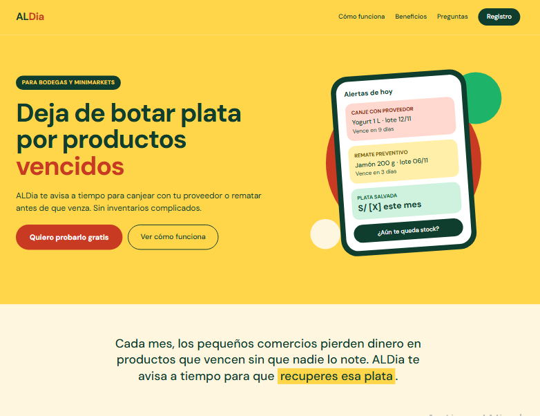
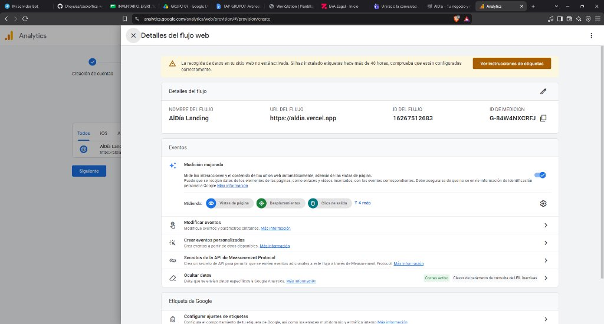
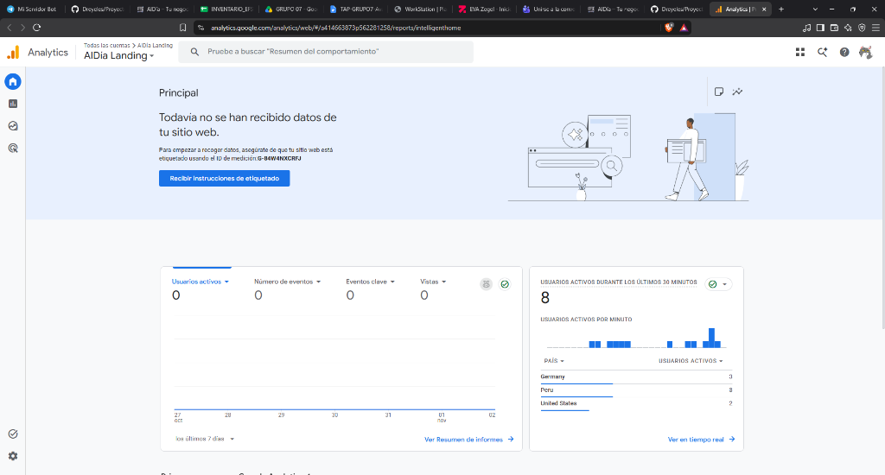

Estrategia Digital y Analítica Web Multicanal
Despliegue de Landing Page en GitHub Pages (Jamstack CDN), telemetría oficial con Google Analytics 4 Nativo y canal social en Facebook Fanpage.
Validación de hipótesis de adquisición, trazabilidad de eventos clave y sustentación comparativa de métricas web frente a redes sociales para comercios minoristas (NRUS).
- 🏛️ Institución: Zegel Ipae (Educación Superior)
- 📚 Curso: Análisis de Datos Web (Ciclo 2026-II)
- 👥 Equipo Evaluado: Grupo 7 (Integrantes Oficiales)
- 🎯 Aplicación Móvil: AlDía – "Tu negocio y mercadería, siempre al día"
- ⏱️ Duración Exposición: 10:30 – 11:00 minutos cronometrados
Propuesta del Aplicativo Móvil y Embudo de Conversión
Problema Central: En Perú, las bodegas y minimarkets pierden entre S/ 350 y S/ 600 mensuales por productos que caducan en anaquel y pérdida de la ventana de canje gratuito con repartidores (Bimbo, Gloria).
Solución AlDía (Baja Fricción): Cero tipeo en caja. Visión computacional para registrar guías por foto, semáforo preventivo de canjes y salida automatizada FEFO.
Landing Page en GitHub Pages y Arquitectura Jamstack
Entorno: Servidor CDN global de GitHub Pages con control de versiones Git, entrega estática minificada en sub-segundo (<800ms) y alta disponibilidad del 99.9% sin saturaciones de CPU ni bases de datos.
- 🔴 Atención: Titular emocional de pérdida: "Deja de botar plata por productos vencidos".
- 🟡 Interés: Mockup visual de smartphone con alertas preventivas reales (Canje Bimbo/Gloria).
- 🟢 Deseo: Calculadora interactiva que cuantifica el dinero rescatado según compras.
- ⭐ Acción (CTA): Botón "Quiero probarlo gratis / Descargar App" visible en el 100% del primer scroll.

Integración Técnica de Analítica con Google Analytics 4 Nativo
Integración directa de gtag.js y la capa dataLayer en el código fuente. Elimina intermediarios y plugins pesados de CMS, garantizando máxima velocidad de carga móvil (<800ms) y control granular de eventos.
-
📊
Google Analytics 4: Medición por eventos (ID:
G-84W4NXCRFJ). - 🔍 Search Console: Verificación de propiedad e indexación de búsqueda.
Uso de la capa window.dataLayer para capturar la interacción real del usuario con el producto:

Canal de Tráfico Social: Fanpage en Facebook
Canal de prospección orgánico configurado con identidad de marca para impactar directamente al ecosistema de bodegueros y comerciantes minoristas en Facebook Groups y feed local.
- 🔗 Botón de Acción Principal: "Usar aplicación / Visitar sitio web" derivando tráfico a la landing page.
-
🏷️
Etiquetado UTM: Parámetros
utm_source=facebook&utm_medium=organic_postpara aislar el tráfico social en GA4.
Publicaciones centradas en la empatía con el comerciante:
Prueba gratis AlDía por 14 días y automatiza tus canjes.
Definición y Sustentación de KPIs para la Web
| Indicador (KPI) | Fórmula / Métrica en GA4 | Sustentación Técnica (Por qué importa) | Meta / Benchmark |
|---|---|---|---|
| Usuarios y Sesiones | Total Users & Sessions | Volumen neto de comerciantes atraídos y frecuencia de retorno a la plataforma. | Volumen base inicial |
| Tasa de Interacción Reemplazo de rebote |
(Sesiones Interactivas / Total) * 100 | Evalúa permanencia real: sesiones de más de 10s o con eventos de conversión. | > 60.0% (Alta retención) |
| Tiempo de Interacción | Average Engagement Time | Mide si el bodeguero analizó la calculadora de pérdidas y leyó los planes. | > 1m 15s |
|
⭐ KPI MAESTRO Tasa de Conversión (CR) |
(Clics en Descargar / Sesiones) * 100 | Indicador definitivo de viabilidad comercial: valida cuántos visitantes decidieron adquirir el producto. | 3.0% – 7.0% (Estándar SaaS B2B) |
| Canales de Tráfico | Session Default Channel Group | Aislamiento de fuentes (Social Facebook vs Directo vs Referencia). | Facebook > 40% |
Definición y Sustentación de KPIs para Facebook
| KPI Facebook | Definición / Cálculo | Dato Registrado | Objetivo Analítico |
|---|---|---|---|
| Alcance (Reach) | Cuentas únicas que visualizaron los posts. | 450 cuentas | Amplitud inicial del embudo (ToFU). |
| Impresiones | Exposiciones totales de las publicaciones. | 780 impactos (1.73x) | Frecuencia del mensaje en bodegas. |
| Tasa de Engagement | (52 interacc. / 450) * 100 | 11.55% | Interés y comentarios en comerciantes. |
|
⭐ KPI CLAVE CTR Enlace Saliente |
(22 clics / 780 impr.) * 100 | 2.82% (22 clics) | Puente Multicanal: visitas enviadas a GitHub Pages. |
En el curso de Análisis de Datos Web aprendemos a no engañarnos con "métricas de vanidad":
Resultados Iniciales y Comparativa Multicanal

Conclusiones del Avance 1 y Próximos Pasos
- ✅ Excelencia de la Arquitectura Jamstack: Demostramos que alojar la landing en GitHub Pages con GA4 nativo supera a los hostings tradicionales en velocidad, disponibilidad y costo cero.
- ✅ Trazabilidad Validada: El modelo de eventos de GA4 capta con precisión milimétrica los clics en el botón CTA y el simulador.
- ⚠️ Dificultades Superadas: Límites de memoria PHP (128MB) y llamadas cURL en hosting gratuito resueltas mediante optimización de imágenes y caché estática.
- 🧪 Pruebas A/B en CTA: Experimentar con el color (Terracota vs Cian Neón) y copy del botón ("Descargar App" vs "Calcular mi ahorro gratis") para maximizar la tasa de conversión.
- 📊 Dashboard en Looker Studio: Construir un cuadro de mando integral que consolide en tiempo real las APIs de Google Analytics 4 y Meta Facebook Insights.
- 📈 Segmentación de Audiencia: Analizar la tasa de conversión discriminada por distrito y tipo de dispositivo (Android vs iOS).
Cierre de Exposición y Ronda de Preguntas
¡Muchas Gracias por su Atención!
Equipo evaluado: Grupo 7 · Análisis de Datos Web
Instituto de Educación Superior Zegel · Ciclo 2026-II